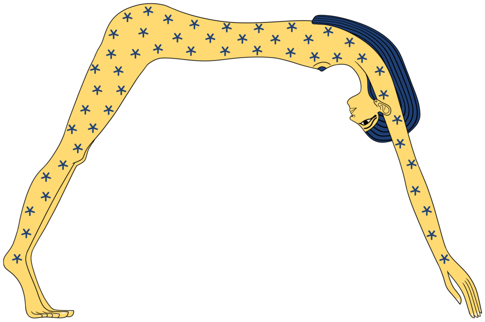

Кто такая Нут
Нут — небо, представленное женщиной: её тело, усеянное звёздами, изогнуто дугой над плоской землёй Геба, руки-ноги упираются в четыре края света, а между ними — воздух Шу, разделивший их. Её длинные волосы ниспадают на запад (закат): вечернее небо «входит» в неё, утреннее — «рождается» из неё. Египтяне говорили: «Нут носит солнце во чреве и рождает его вновь каждое утро» — солнце уходит в её рот вечером и выходит между её ног? на рассвете — астрономическая честность мифа: восход и закат как пасть и рождение.
Дочь Шу и Тефнут, жена Геба, мать четверых (пятерых с «лишними днями»?): Осирис, Исида, Сет, Нефтида — и Хор? (старший Гор — иногда пятый). Их всех она зачала в «пять лишних дней», которые Тот выиграл у луны: по мифу, Ра запретил Нут рожать «в любом месяце из тридцати» — хитрый Тот выманил у луны пятую часть её света = пять дней, не входящих в год, — и в них родились боги.
Небесная корова и лестница
В «Книге Небесной Коровы» небо — корова, выносящая Ра на спину после его «старения» среди людей; жрецы отождествляли корову с Хатор, а «опоры неба» — с четырьмя столпами по углам мира. В «Текстах пирамид» Нут — «лестница на небо»: царь всходит по её телу к звёздам; её «корабль» — солнечная барка, а «молочные реки» — Млечный Путь (египетское «дорога»?? — «река Нут»): по «текстам» душа праведника уплывает по Млечному Пути к «полям тростника неба».
Нут и мёртвые
«Да буду я звездой у Нут» — желание умершего: «Тексты пирамид» зовут: «О Нут, протяни надо мной руки твои, да буду я в числе звёзд, что в тебе». На крышках саркофагов — «Нут крылатая»: женщина с распущенными волосами и распростёртыми крыльями (или с анхами в руках) — небо, принимающее мёртвого как звёзды принимает вечером; на потолках царских гробниц — её «карта»: декады, звёздные часы, «часовая книга» неба. Она же — «госпожа запада», утешительница: «я — мать твоя, Нут, я обнимаю тебя, как обнимаю Ра».